Soru 1Cevap: D
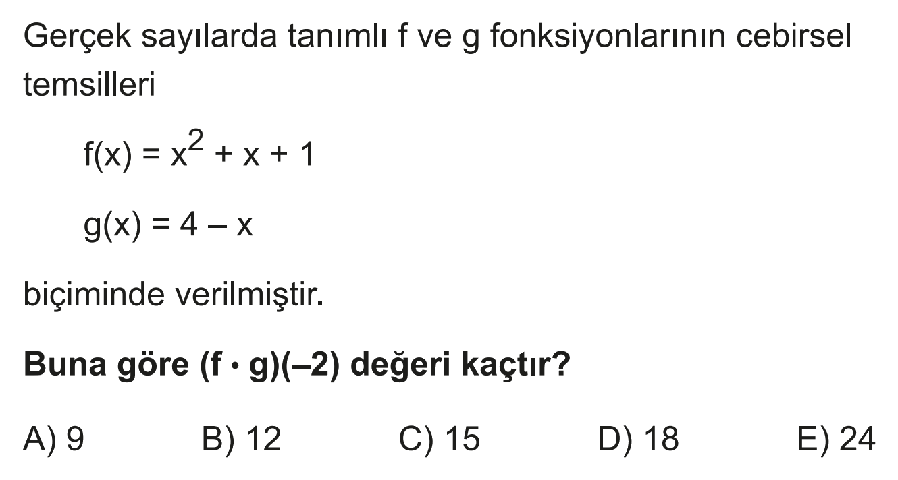
Çözüm
- $f(-2)=4-2+1=3$.
- $g(-2)=4+2=6$.
- $(f\cdot g)(-2)=18$ (D).
Cevap: D
Soru 2Cevap: D
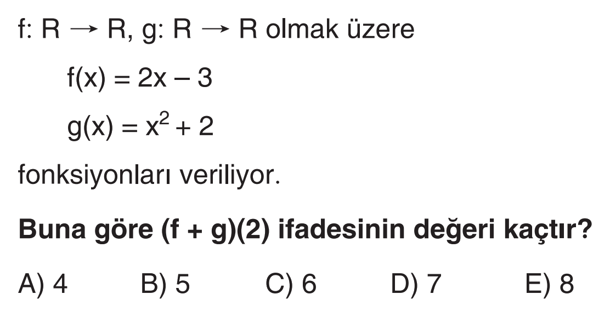
Çözüm
- $f(2)=1$.
- $g(2)=6$.
- $(f+g)(2)=7$ (D).
Cevap: D
Soru 3Cevap: D
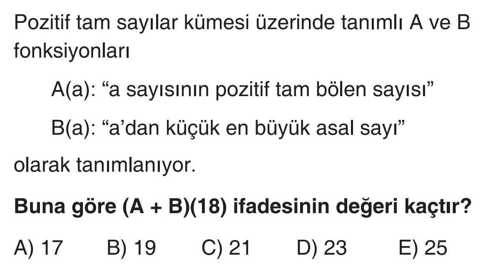
Çözüm
- $18$'in pozitif bölenleri $1,2,3,6,9,18$: $A(18)=6$.
- $18$'den küçük en büyük asal $17$: $B(18)=17$.
- $(A+B)(18)=23$ (D).
Cevap: D
Soru 4Cevap: B
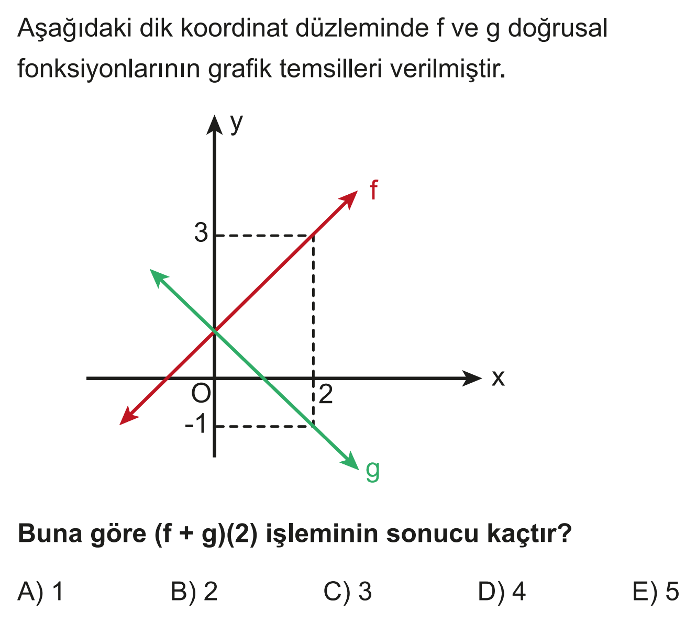
Çözüm
- Grafikten $f(2)=3$.
- Grafikten $g(2)=-1$.
- $(f+g)(2)=2$ (B).
Cevap: B
Soru 5Cevap: B
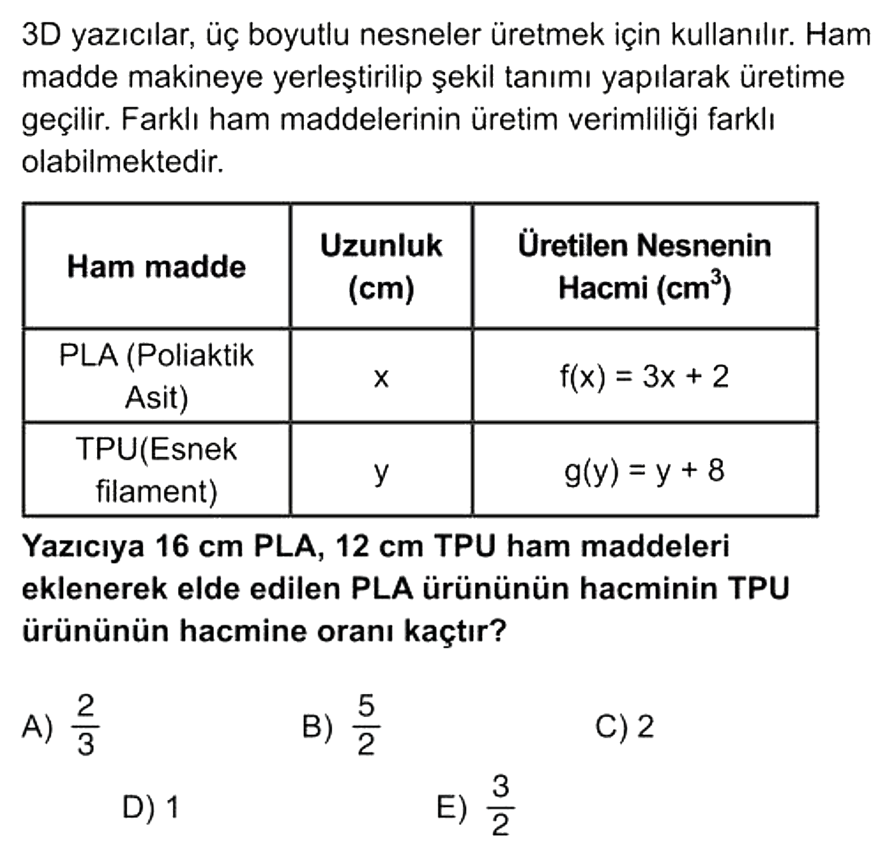
Çözüm
- $16$ cm PLA: $f(16)=50$ cm³.
- $12$ cm TPU: $g(12)=20$ cm³.
- Oran $\dfrac{50}{20}=\dfrac52$ (B).
Cevap: B
Soru 6Cevap: D
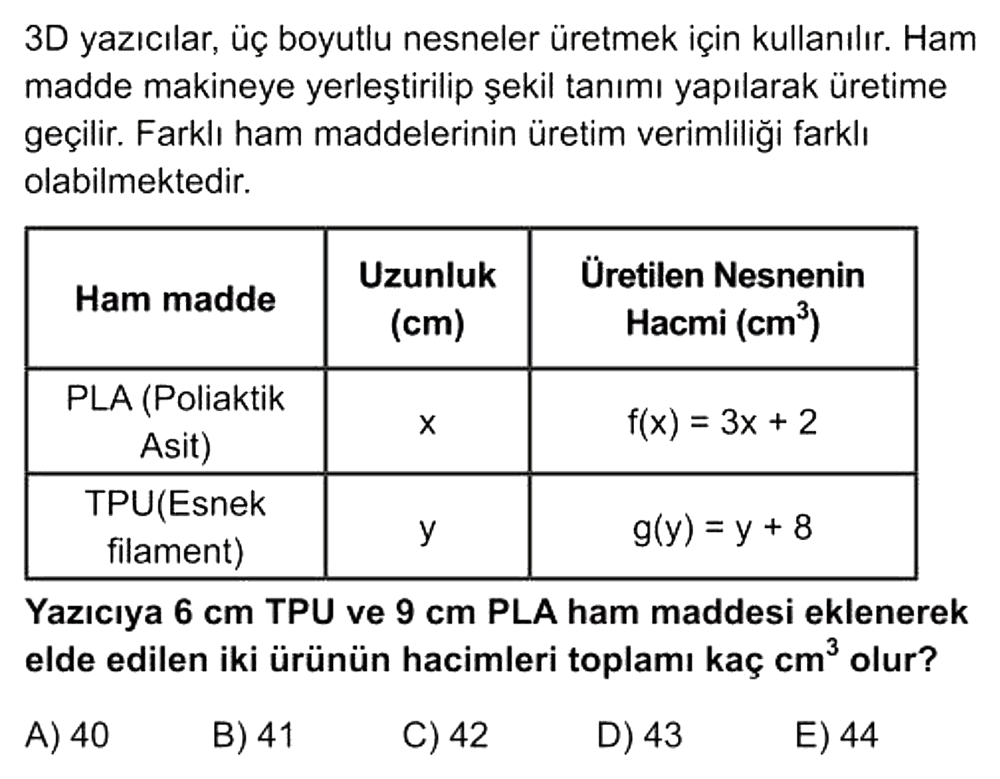
Çözüm
- $6$ cm TPU: $g(6)=14$.
- $9$ cm PLA: $f(9)=29$.
- Toplam $43$ cm³ (D).
Cevap: D
Soru 7Cevap: A
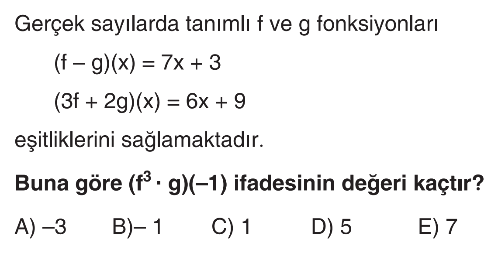
Çözüm
- $2(f-g)=14x+6$ ile $3f+2g=6x+9$ toplanır: $5f=20x+15$, $f(x)=4x+3$.
- $g(x)=f(x)-(7x+3)=-3x$.
- $f(-1)=-1$, $g(-1)=3$: $(f^3\cdot g)(-1)=-3$ (A).
Cevap: A
Soru 8Cevap: E
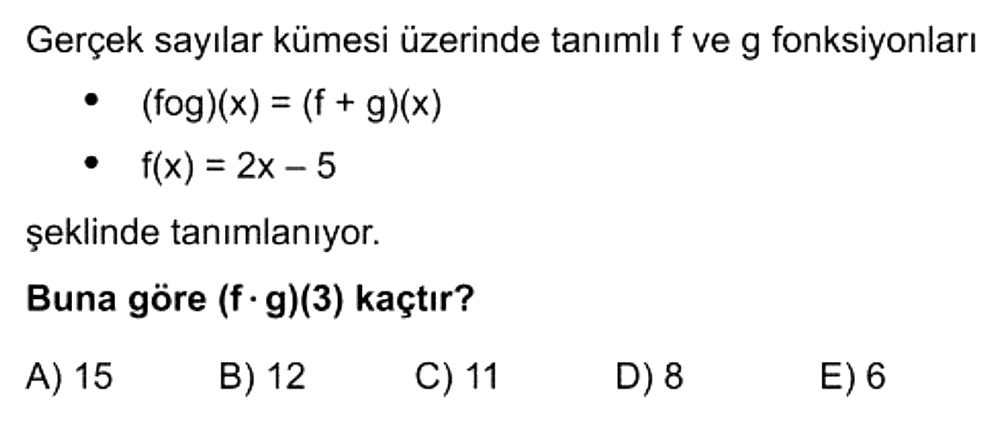
Çözüm
- $(f\circ g)(x)=2g(x)-5=2x-5+g(x)$.
- $g(x)=2x$.
- $f(3)=1$, $g(3)=6$: $(f\cdot g)(3)=6$ (E).
Cevap: E
Soru 9Cevap: B
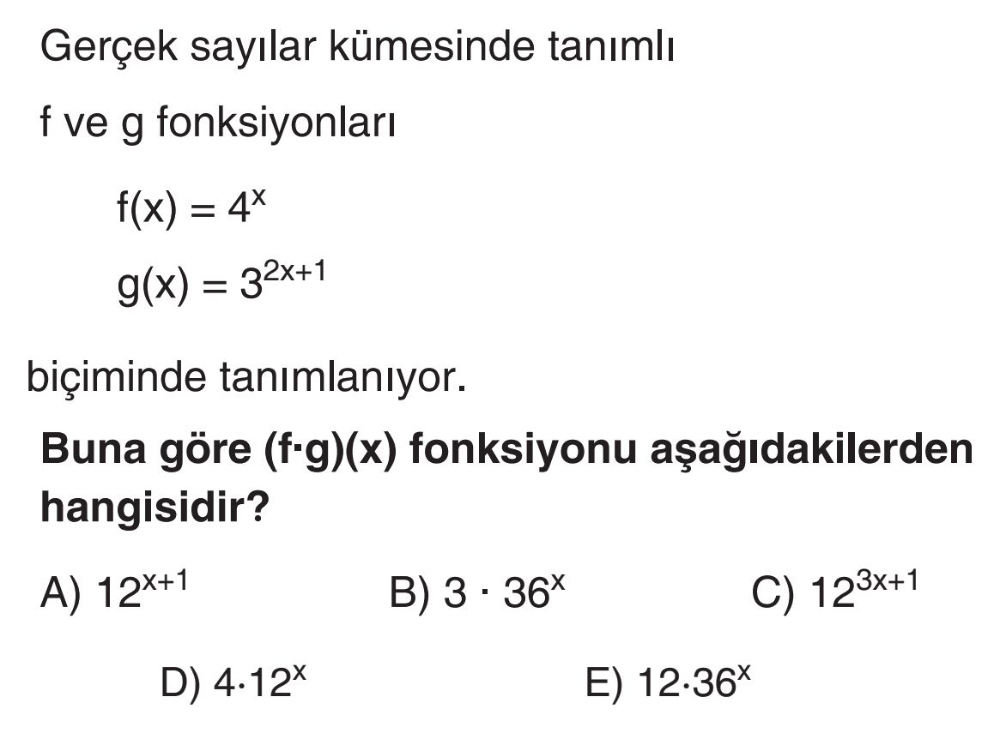
Çözüm
- $(f\cdot g)(x)=4^x\cdot3^{2x+1}=4^x\cdot9^x\cdot3$.
- $4^x\cdot9^x=36^x$.
- $3\cdot36^x$ (B).
Cevap: B
Soru 10Cevap: B
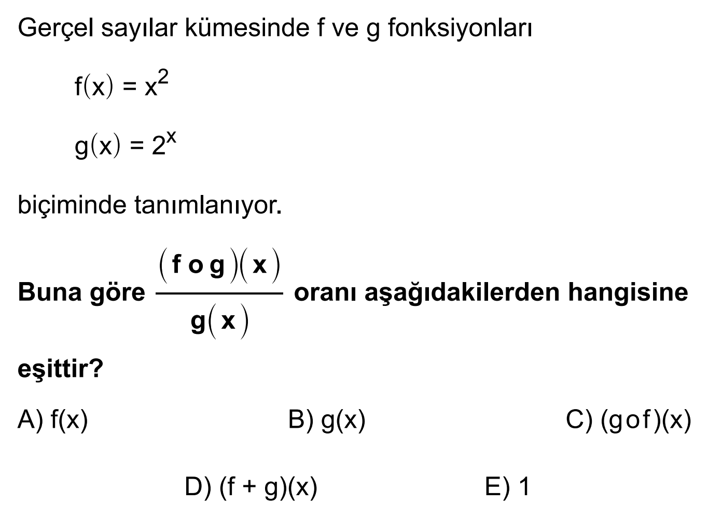
Çözüm
- $(f\circ g)(x)=(2^x)^2=4^x$.
- $\dfrac{4^x}{2^x}=2^x$.
- $=g(x)$ (B).
Cevap: B
Soru 11Cevap: C
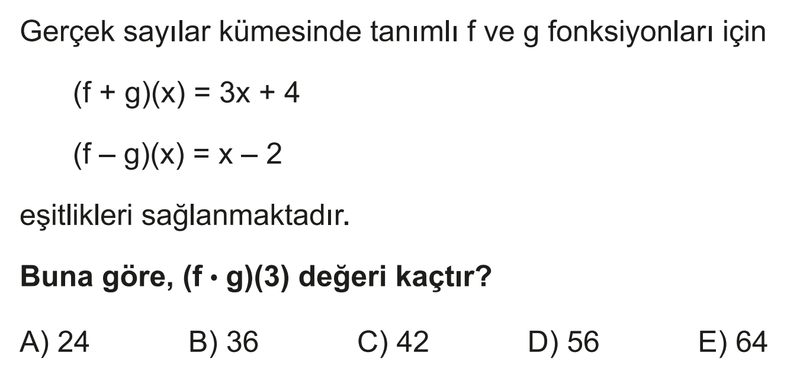
Çözüm
- Toplanırsa $2f(x)=4x+2\Rightarrow f(x)=2x+1$.
- $g(x)=(3x+4)-(2x+1)=x+3$.
- $(f\cdot g)(3)=7\cdot6=42$ (C).
Cevap: C
Soru 12Cevap: B
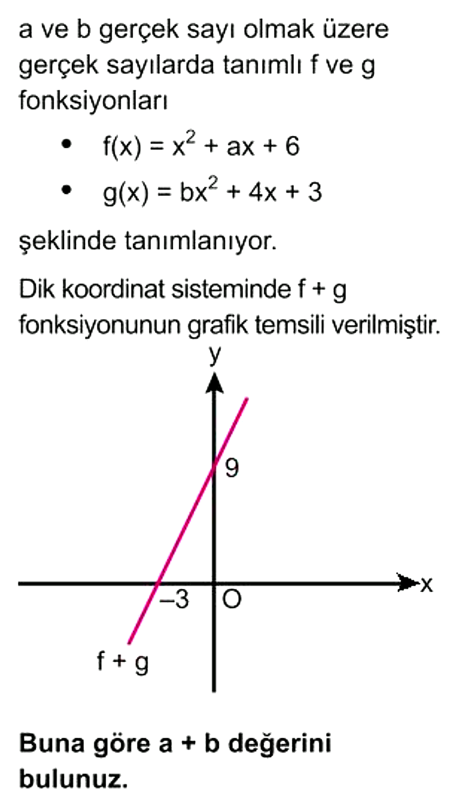
A)$-4$B)$-2$C)$0$D)$2$E)$4$
Çözüm
- $(f+g)(x)=(1+b)x^2+(a+4)x+9$; grafik bir doğru: $b=-1$.
- Doğru $(-3,0)$ ve $(0,9)$'dan geçer, eğimi $3$: $a+4=3\Rightarrow a=-1$.
- $a+b=-2$ (B).
Cevap: B
Soru 13Cevap: D
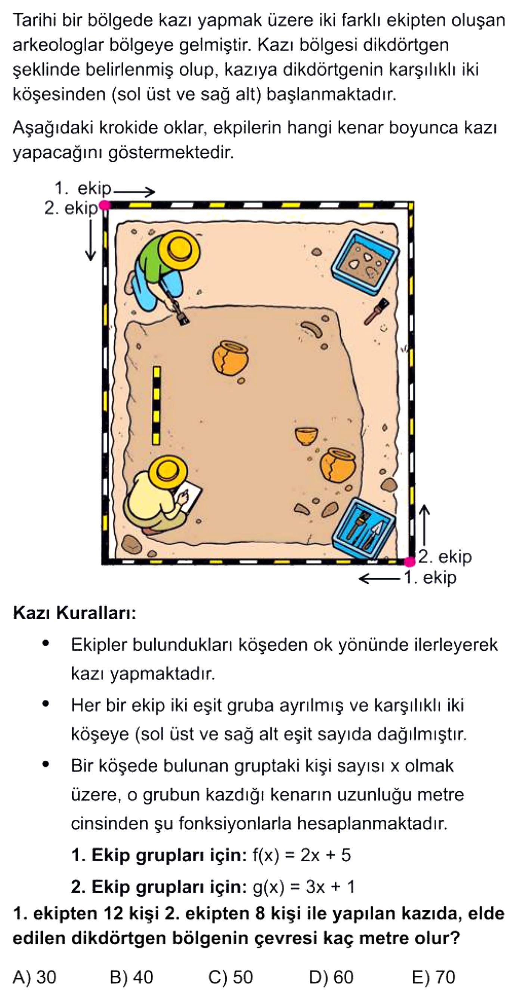
Çözüm
- 1. ekip $12$ kişi, köşe başına $6$: kenar $f(6)=17$ m.
- 2. ekip $8$ kişi, köşe başına $4$: kenar $g(4)=13$ m.
- Çevre $2(17+13)=60$ m (D).
Cevap: D
Soru 14Cevap: C
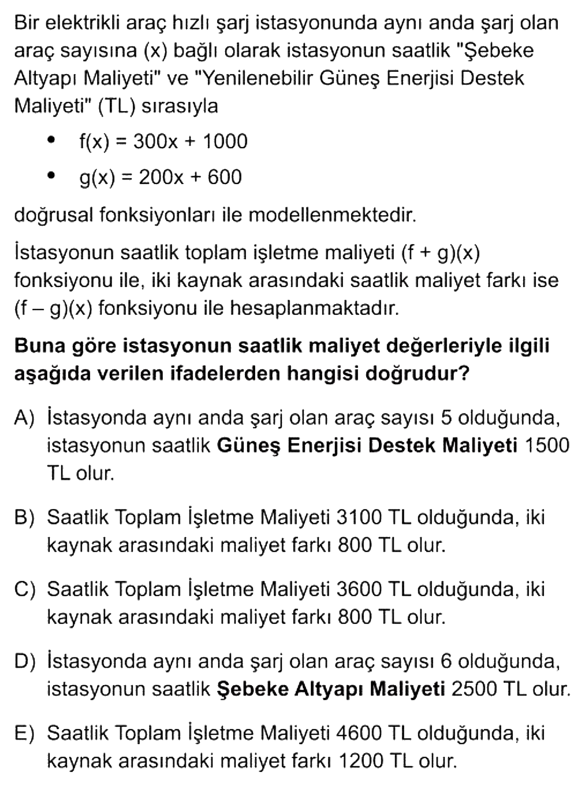
Çözüm
- $(f+g)(x)=500x+1600$, $(f-g)(x)=100x+400$.
- $500x+1600=3600\Rightarrow x=4$.
- $(f-g)(4)=800$: C doğru.
Cevap: C
Soru 15Cevap: C
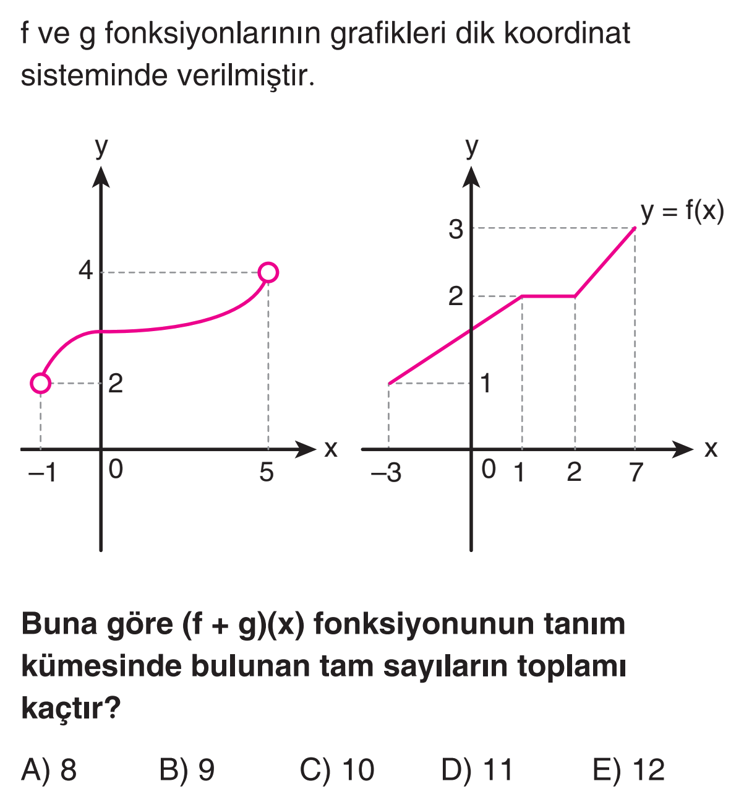
Çözüm
- $f$'nin tanım kümesi $(-1,5)$ (uçlar boş daire).
- $g$'nin tanım kümesi $[-3,7]$.
- Kesişim $(-1,5)$: $0+1+2+3+4=10$ (C).
Cevap: C
Soru 16Cevap: C
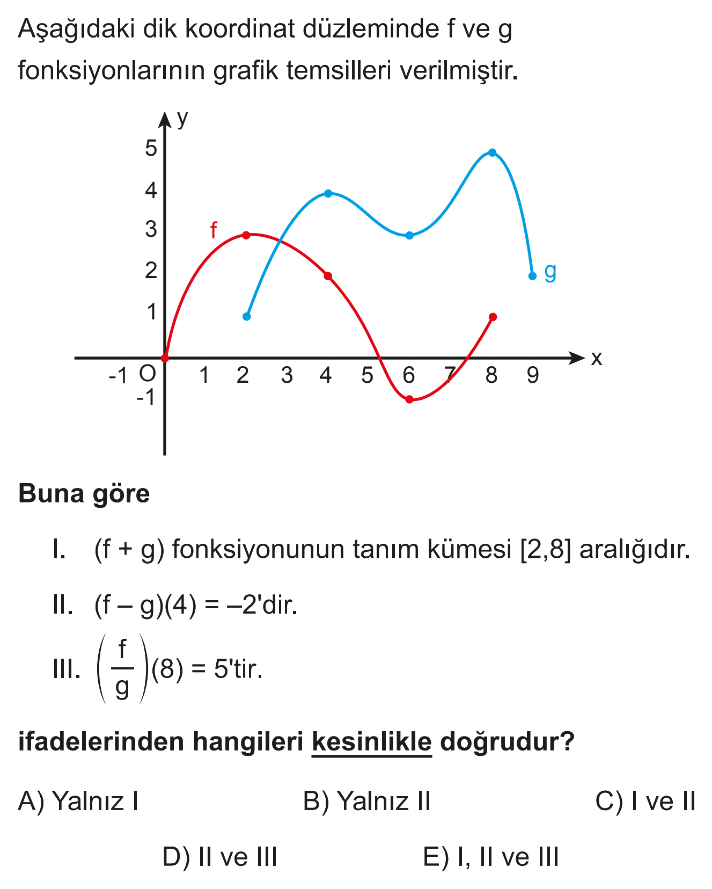
Çözüm
- $f+g$'nin tanım kümesi iki tanım kümesinin kesişimi $[2,8]$: I doğru.
- Grafikten $f(4)=1$, $g(4)=3$: $(f-g)(4)=-2$; II doğru.
- $f(8)=1$, $g(8)=5$: $\left(\dfrac fg\right)(8)=\dfrac15$; III yanlış (C).
Cevap: C
Soru 17Cevap: A
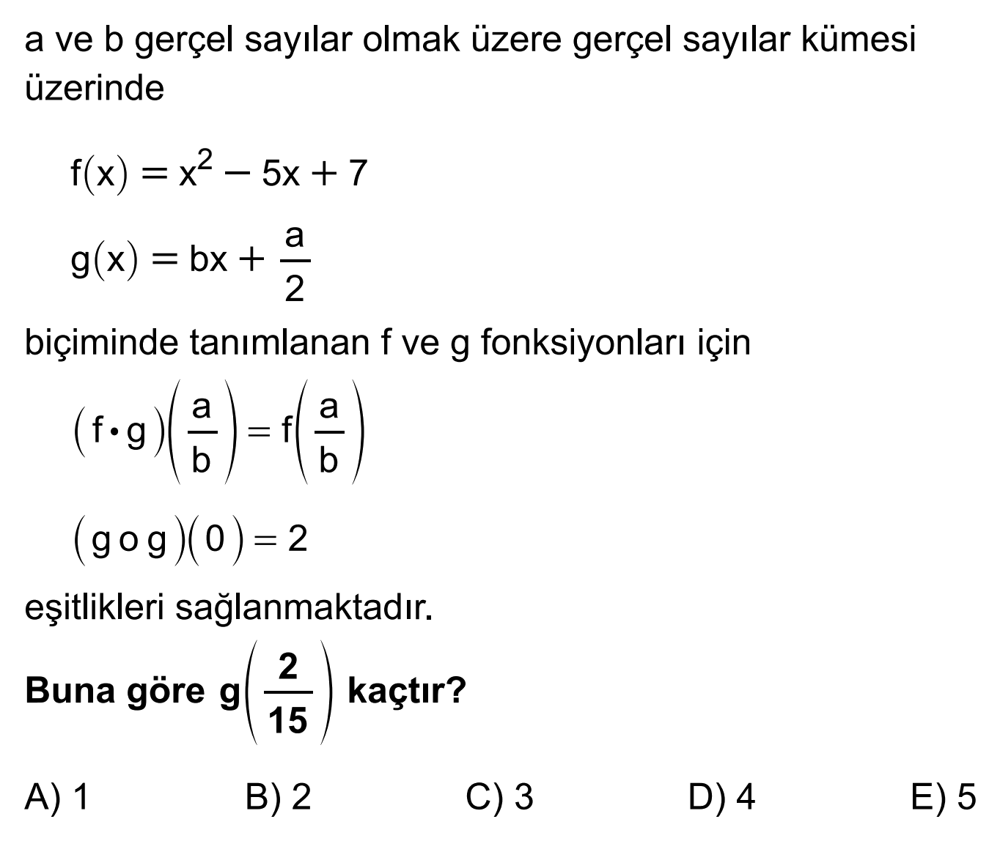
Çözüm
- $f(t)(g(t)-1)=0$; $f$'nin gerçek kökü yok ($\Delta\lt0$): $g\left(\dfrac ab\right)=1\Rightarrow a+\dfrac a2=1$, $a=\dfrac23$.
- $(g\circ g)(0)=g\left(\dfrac13\right)=\dfrac b3+\dfrac13=2\Rightarrow b=5$.
- $g\left(\dfrac2{15}\right)=\dfrac23+\dfrac13=1$ (A).
Cevap: A
Soru 18Cevap: C
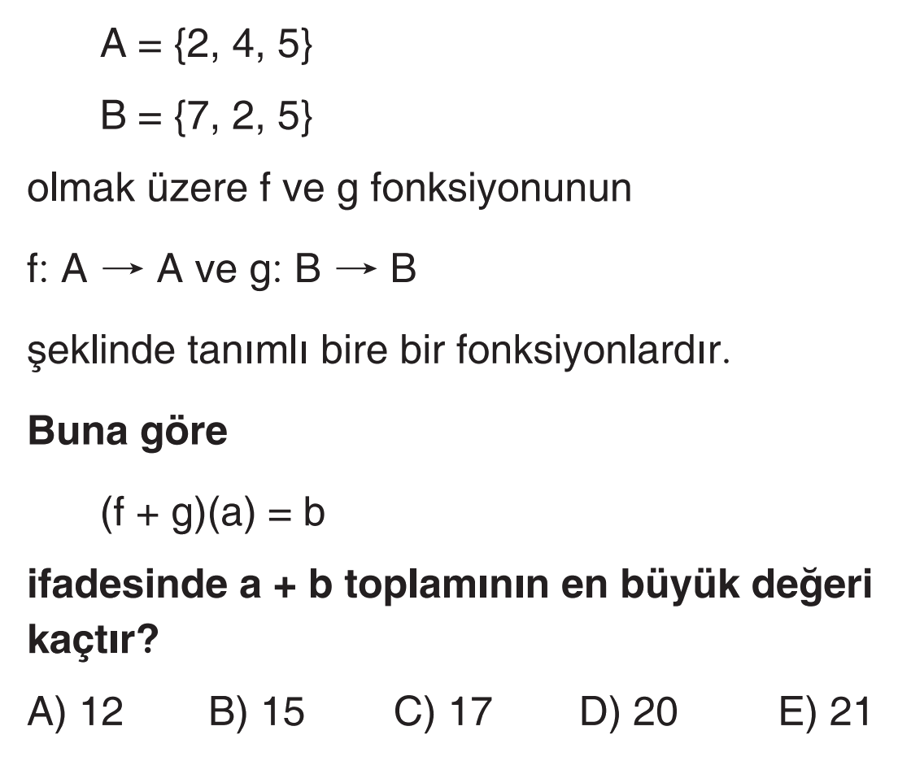
Çözüm
- $f+g$ yalnız $A\cap B=\{2,5\}$'te tanımlıdır.
- En büyük toplam için $a=5$: $f(5)$ en çok $5$, $g(5)$ en çok $7$ (bire bir eşlemeler kurulabilir).
- $b=12$; $a+b=17$ (C).
Cevap: C
Soru 19Cevap: B
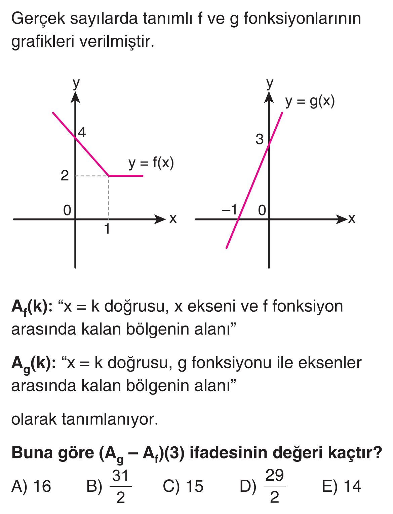
Çözüm
- $A_f(3)$: $[0,1]$'de yamuk $\dfrac{4+2}{2}=3$, $[1,3]$'te dikdörtgen $4$; toplam $7$.
- $g(x)=3x+3$; $A_g(3)$: yamuk $\dfrac{3+12}{2}\cdot3=\dfrac{45}{2}$.
- $\dfrac{45}{2}-7=\dfrac{31}{2}$ (B).
Cevap: B
Soru 20Cevap: C
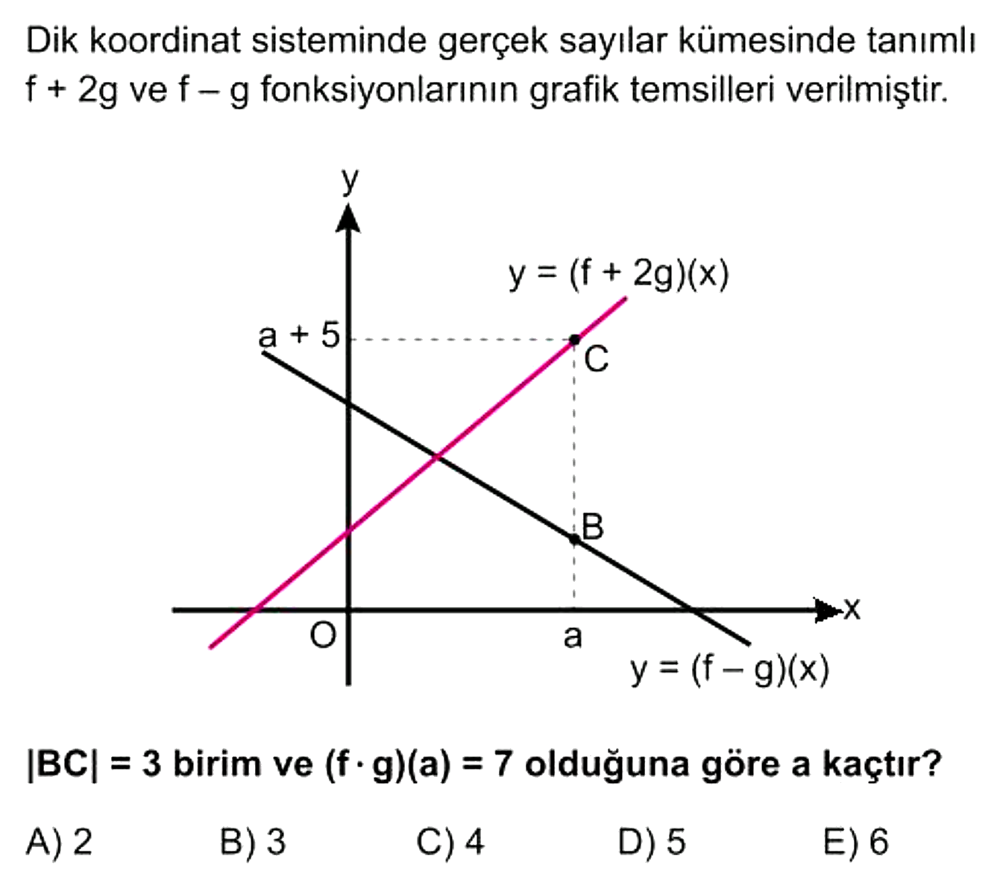
Çözüm
- $C$ noktası $(f+2g)(a)=a+5$; $|BC|=3$ olduğundan $(f-g)(a)=a+2$.
- Çıkarılırsa $3g(a)=3$: $g(a)=1$, $f(a)=a+3$.
- $(f\cdot g)(a)=a+3=7\Rightarrow a=4$ (C).
Cevap: C